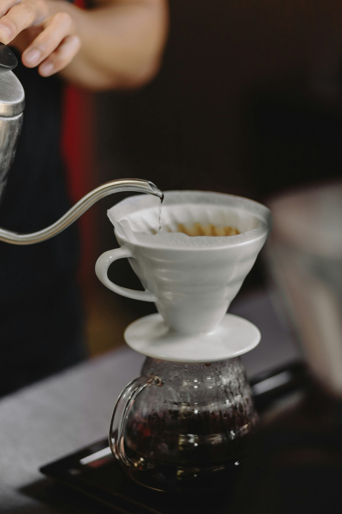
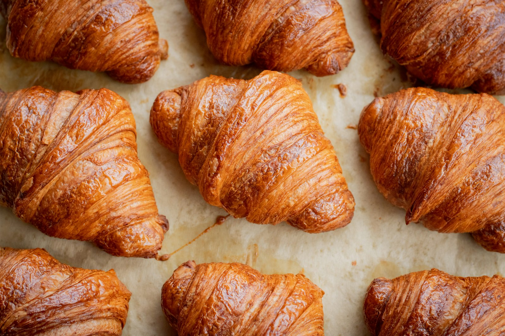
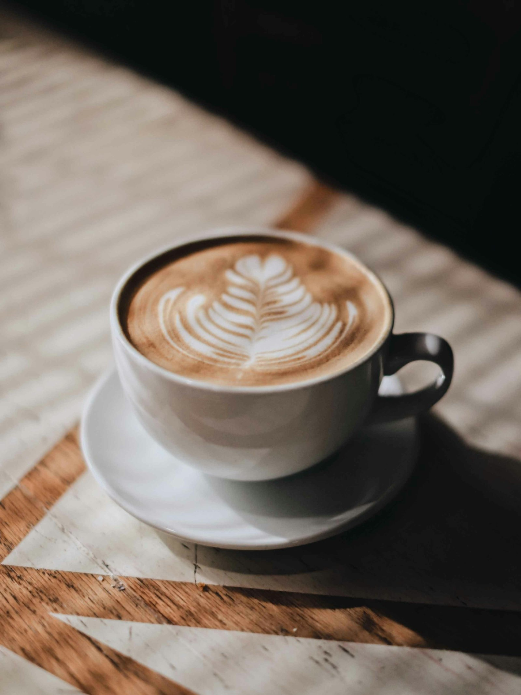
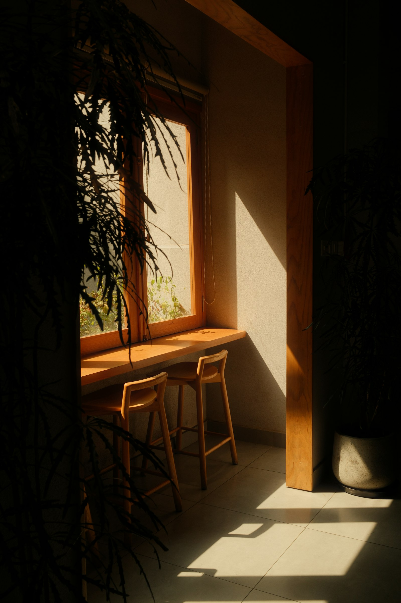

こもれび
COFFEE & BAKE
トップ
メニュー
アクセス
MENU
メニュー
価格はすべて税込です。テイクアウトもできます。

DRINK
ドリンク
こもれびブレンド
中深煎り・ホット／アイス
¥550
浅煎りシングルオリジン
月替わりの豆
¥650
カフェラテ
オーツミルクに変更 +¥50
¥600
ほうじ茶ラテ
¥600
自家製レモネード
夏季限定
¥550
フード
日替わりランチ
11:30〜14:00／スープ・サラダ付き
¥1,200
厚切りトーストセット
〜11:00／ドリンク付き
¥800
キッシュプレート
¥1,100
焼き菓子
季節のタルト
旬の果物
¥620
バスクチーズケーキ
¥580
スコーン（2種）
クロテッドクリーム付き
¥380
焼き菓子ギフト
ご予約がおすすめ
¥1,800〜



デモサイト｜ライトプラスプラン（3ページ）